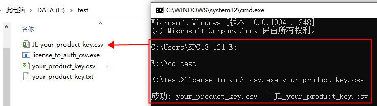
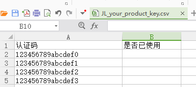
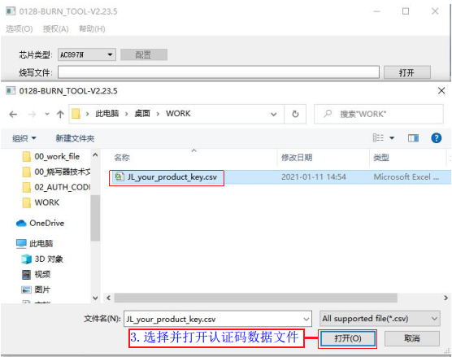
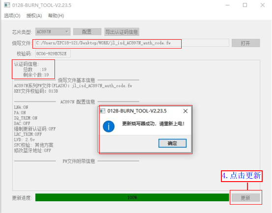
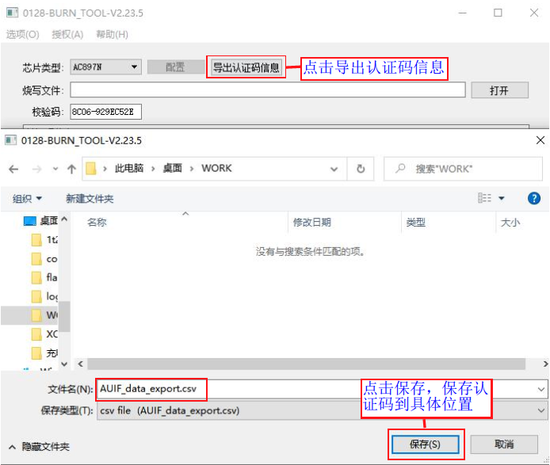
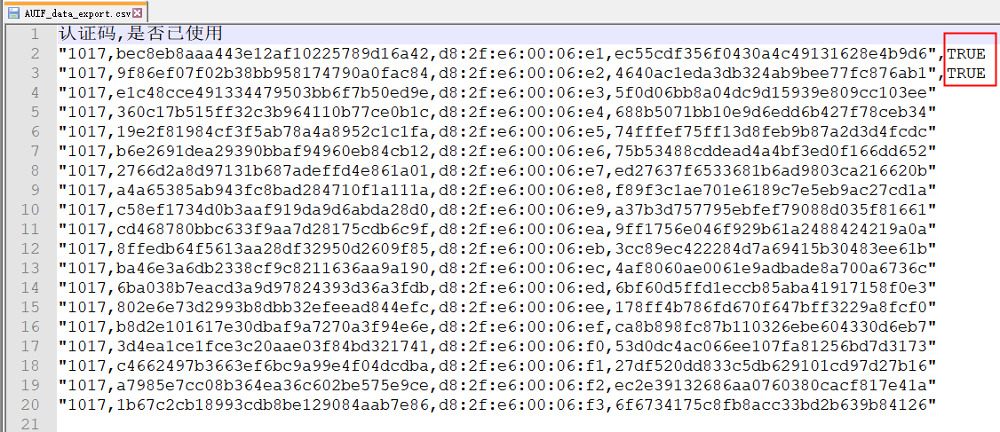
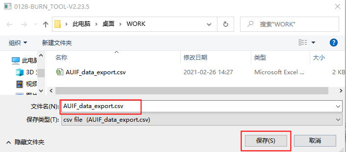

1.8. 第三方数据（认证码）烧录功能
1.8.1. 应用场景
在SDK开发开发过程中，需要用到第三方的数据，如认证码（序列号，三元组），可在烧录目标芯片程序过程中，同时将第三方数据烧录到目标芯片指定位置,既可以实现在SDK开发中对烧录到芯片内第三方数据的利用。
1.8.2. 认证码数据准备
1.8.2.1. 准备要烧录的数据
如认证码数据编辑格式所示，将SDK需要使用到的认证码数据在记事本进行编辑，一行数据代表一个认证码（1颗芯片只烧录1个认证码即SDK只能获取到其中一行数据）；
编辑好数据后将your_product_key.txt文件修改后缀名或另存为your_product_key.csv文件。

认证码数据编辑格式
1.8.2.1.1. 待烧录的数据格式转换
待烧录的数据需要进行格式转换，才能被烧录器识别并烧录到目标芯片。
把待转换的.csv文件认证码数据和转换工具license_to_auth_csv.exe（点击此处下载）放到同一目录；
同时按住键盘”windows + R”，输入cmd,打开命令行界面；
如文件存放目录E:\test，进入目录并执行
license_to_auth_csv.exe your_product_key.csv，最终生成烧录器可识别的数据文件JL_your_product_key.csv。 如认证码数据格式转换和认证码转换后的数据格式所示。

认证码数据格式转换

认证码转换后的数据格式
Note
默认情况下，.csv文件中，每一行的内容是以文本形式写入的。如果每一行的内容是二进制内容的 hex 形式，则可以将 .csv 文件后缀名修改为 .hex，这样烧录的时候会按二进制形式写入。
例如，对于 .csv 文件中的一行
112233
以文本形式写入的时候，写入的是 “112233” 共 6 个字节，分别是 ‘1’, ‘1’, ‘2’, ‘2’, ‘3’, ‘3’。
对于 .hex 文件中的一行
112233
则会以二进制的形式写入，写入的是 “\x11\x22\x33” 共 3 个字节，分别是 0x11, 0x22, 0x33。
1.8.3. 认证码数据烧录流程
1.8.3.1. 制作支持认证码烧录的fw文件
认证码烧录需要对应的fw烧录文件支持才能实现烧录，制作支持认证码烧录的fw文件分实现步骤如支持认证码烧录的fw文件制作所示：
打开SDK工程的下载目录下的
isd_config.ini文件;在
isd_config.ini文件 [SYS_CFG_PARAM] 段增加AUTH_CODE=1;配置项后保存文件；双击运行下载目录下的
download.bat脚本；重新生成可以支持认证码烧录的
jl_isd.fw文件。
Important
SDK 中的 isd_config.ini 文件，可能是经过预处理工具生成的。
所以如果直接修改 isd_config.ini 后，点击编译（而不是双击运行download.bat），可能会被预处理工具生成新的 isd_config.ini 文件覆盖。
一些 SDK 可能会通过 isd_config_rule.c 预处理生成 isd_config.ini。
如果你发现，修改后的 isd_config.ini，在编译 SDK 后被还原了，请确认是否是这个原因导致的。
如果是这种情况，请直接修改 isd_config_rule.c。

支持认证码烧录的fw文件制作
Note
一个认证码数据长度不能超过128字节长度；小于128字节的认证码数据，该数据存储于flash末尾位置，SDK有对应接口获取烧录好的数据；
如果需要烧录超过128字节长度的认证码数据，需要在SDK下载目录的isd_config.ini文件配置指定flash烧录地址（也可配置为AUTO自动分配地址）和存储长度，SDK根据配置的地址获取数据使用。
当前烧录器最大支持配置4K认证码数据烧录到flash指定或自动生成的地址，如要烧录更大容量认证码数据，请联系杰理技术支持！
烧录超过128字节长度的认证码数据，需要在SDK下载目录的isd_config.ini文件增加如下配置：
[BURNER_PASSTHROUGH_CFG]
AUTH_CODE_ADDR = $(TEST1_ADR);
[RESERVED_CONFIG]
TEST1_ADR=AUTO;
TEST1_LEN=4K;
TEST1_OPT=1;
1.8.3.2. 更新fw烧录程序和认证码文件到烧录器
使用USB线进行PC和烧录器连接，烧录器进入“PC模式”后，PC端打开“更新烧录程序控制界面”（如不懂请参考《部署目标芯片程序到烧录器》小节，了解具体的打开流程）。 具体操作步骤如下：
打开并选择支持认证码烧录的fw文件,如打开并选择支持认证码烧录的fw文件所示；
点击OK（取消的话仅更新fw文件到烧录器）；
点击OK后选择并打开认证码数据文件,如打开并选择认证码数据文件所示；
点击配置，选择是否强制更新认证码后点击OK（勾选，如芯片已烧有认证码会覆盖烧录，避免浪费一般不勾选），如配置是否勾选强制更新所示
点击“更新”，部署成功后有更新成功提示，并显示有认证码信息，如部署fw文件和认证码文件到烧录器所示
部署完毕对烧录器重新上电；
Note
重新烧录程序的时候，不同的选项会影响认证码是否会被擦除：
是否选择认证码文件 |
是否勾选强制更新认证码 |
行为 |
|---|---|---|
选择认证码文件 |
未勾选 |
保留芯片已有的认证码（如果有） |
选择认证码文件 |
勾选强制更新 |
总是覆盖认证码 |
未选择 |
未勾选 |
擦除芯片中已有的认证码 |
Important
如果在部署界面上未显示认证码相关的选项，请确认选择了fw文件，且当前选择的fw文件是否指定了需要烧录认证码，详见上一节制作支持认证码烧录的fw文件

打开并选择支持认证码烧录的fw文件
Important
如果在部署界面上未显示认证码相关的选项，请确认选择了fw文件，且当前选择的fw文件是否指定了需要烧录认证码，详见上一节制作支持认证码烧录的fw文件

打开并选择认证码数据文件

配置是否勾选强制更新
Important
如果在部署界面上未显示认证码相关的选项，请确认当前选择的fw文件是否指定了需要烧录认证码，详见上一节制作支持认证码烧录的fw文件

部署fw文件和认证码文件到烧录器
1.8.3.3. 认证码数据烧录到芯片
认证码烧录是按认证码数据文件可用序号递增的形式进行烧录，也就是认证码具有唯一性，烧到每个芯片的认证码都不同。
在烧录芯片程序的同时，烧录器会把认证码数据也烧录到目标芯片，因此烧录流程同单一fw文件烧录流程是一致的。
1.8.4. 导出认证码
1.8.4.1. 查看认证码烧录情况导出
使用USB线进行PC和烧录器连接，烧录器进入“PC模式”后，PC端打开“更新烧录程序控制界面”。如导出认证码信息所示，导出认证码信息并保存到指定位置。

导出认证码信息
打开导出的认证码文件，如认证码使用情况所示，已经使用过的认证码，对应的位置标识有“TRUE”表示认证码已被使用过。

认证码使用情况
1.8.4.2. 更新烧录文件时导出
如果在认证码未使用完时更新烧录文件， 为了避免认证码丢失会提示还有未使用完的认证码。如更新烧录文件时导出认证码和导出认证码到指定位置，点击OK按钮后会弹框要求保存认证码文件， 可把认证码文件保存起来方便后续使用（如果不保存，那么将无法更新烧录文件）。

更新烧录文件时导出认证码

导出认证码到指定位置
1.8.5. 注意事项
认证码数据需要使用csv文件方式导入，建议认证码最大长度不超过128 bytes。
每台烧录器导入认证码时，请导入合理数量的认证码，并且烧录完所有认证码后再更新烧录文件。
如果确实需要在认证码未烧录完时更换烧录文件，请自行管理好导出的认证码文件。当再次需要烧录之前未烧录完的认证码，为了避免认证码重复烧录或者丢失，请仔细检查导入的认证码文件。
在 SDK 中访问认证码的方式，每个 SDK 可能略有差异。具体咨询可以咨询提供 SDK 的人。